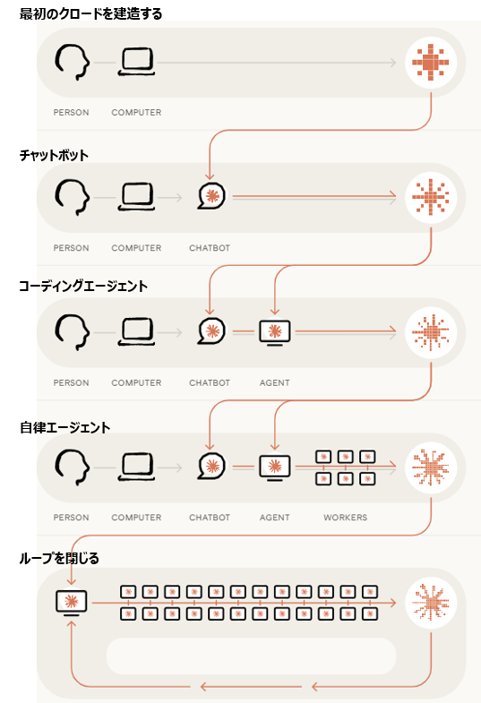

創業当初、Anthropicでの仕事は他のテクノロジー企業と何ら変わりなく、社員がノートパソコンでコードやドキュメントを書いていた。
初期のチャットボットは、短いコードスニペットを生成したり、その出力をテキストエディタにコピーしたりするなど、プロセスの一部を補助するために利用されていた。
エージェントの能力が向上するにつれて、彼らは自らコードを記述・編集できるようになり、時にはファイル全体を書き換えることもできた。
エージェントは、コードを直接実行したり、他のエージェントに何時間もの作業を委任したりできるようになりました。
将来的には、エージェントが自らモデルを構築・訓練できる能力を獲得する可能性がある。そうなれば、Claudeの将来のバージョンは、Claude自身によって継続的に改良されるようになるだろう。この「再帰的自己改善」のフェーズは、AIが主体性を持っているか、そして開発の主導権がどこにあるかという点で、従来の開発体制とは決定的に異なります。

図：再帰的自己改善（ループを閉じる）の概念イメージ
AIがコード生成やテスト、データ処理などの特定タスクを自動化し、人間がそれを監督・評価してシステムに組み込む反復プロセス。人間が方針を決め、AIが作業を代行することで開発スピードを劇的に向上させる。ほとんどの本番コードをAIが記述しても、最終的な評価や修正は人間のエンジニアが行う（ツール・部下としてのAI）。
AI自身が次世代AIのアイデア出し、設計、実装、テストの全工程を自律的に行い、改良されたAIがさらに次のより良いAIを作るサイクル。人間を介さずにAIが指数関数的に賢くなっていくため、開発サイクルは劇的に短縮される。